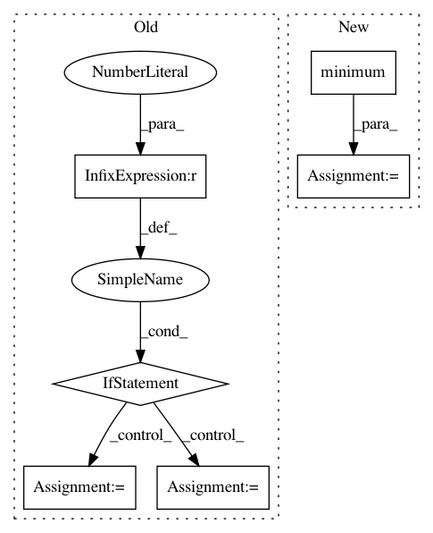

a8c287c0b970968feeaae325379668755760a25b,cnvlib/fix.py,,apply_weights,#Any#Any#Any#,219
Before Change
// Weight is proportional to variance, 0--1
variances = ref_matched["spread"] ** 2
max_variance = variances.max()
if max_variance == 0:
weights = numpy.ones_like(variances)
else:
weights = 1.0 - (variances / max_variance)
// Avoid 0-value bins -- CBS doesn"t like these
weights[weights <= min_weight] = min_weight
return cnarr.add_columns(weight=weights)
After Change
// Relative coverage depths
if (numpy.abs(ref_matched["coverage"]) > epsilon).any(): // basically nonzero
ratios = 2 ** ref_matched["coverage"]
weights2 = numpy.minimum(ratios, 1.0)
weights = (weights + weights2) / 2
// Inverse of variance, 0--1
if (ref_matched["spread"] > epsilon).any(): // basically nonzero
variances = ref_matched["spread"] ** 2
weights3 = 1.0 - (variances / variances.max())
weights = (weights + weights3) / 2
// Avoid 0-value bins -- CBS doesn"t like these
weights = numpy.maximum(weights, epsilon)
return cnarr.add_columns(weight=weights)
In pattern: SUPERPATTERN
Frequency: 3
Non-data size: 6
Instances
Project Name: etal/cnvkit
Commit Name: a8c287c0b970968feeaae325379668755760a25b
Time: 2015-05-01
Author: eric.talevich@gmail.com
File Name: cnvlib/fix.py
Class Name:
Method Name: apply_weights
Project Name: Qiskit/qiskit-aqua
Commit Name: 8ac52eaf2f03402e413101c94301306f41f60a19
Time: 2019-12-12
Author: jules.gacon@googlemail.com
File Name: qiskit/aqua/algorithms/single_sample/amplitude_estimation/iqae.py
Class Name: IterativeAmplitudeEstimation
Method Name: _chernoff_confint
Project Name: LCAV/pyroomacoustics
Commit Name: 3872c53eed54c9ee78438f58dbb8307a6df5e5ca
Time: 2017-06-22
Author: fakufaku@gmail.com
File Name: pyroomacoustics/realtime/stft.py
Class Name: STFT
Method Name: synthesis